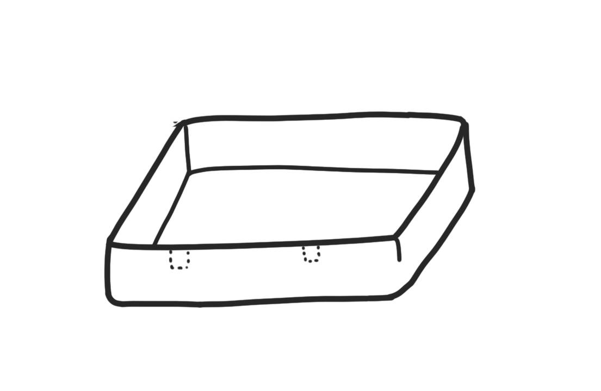
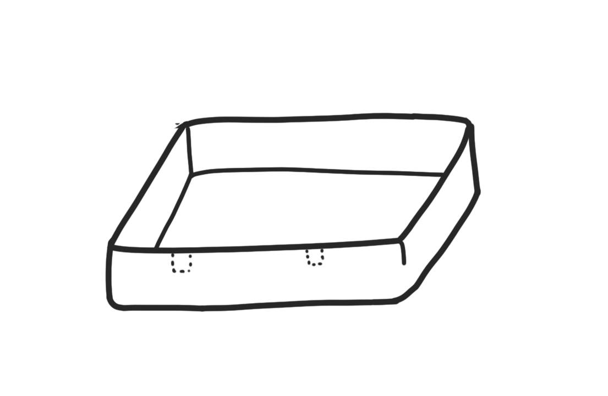
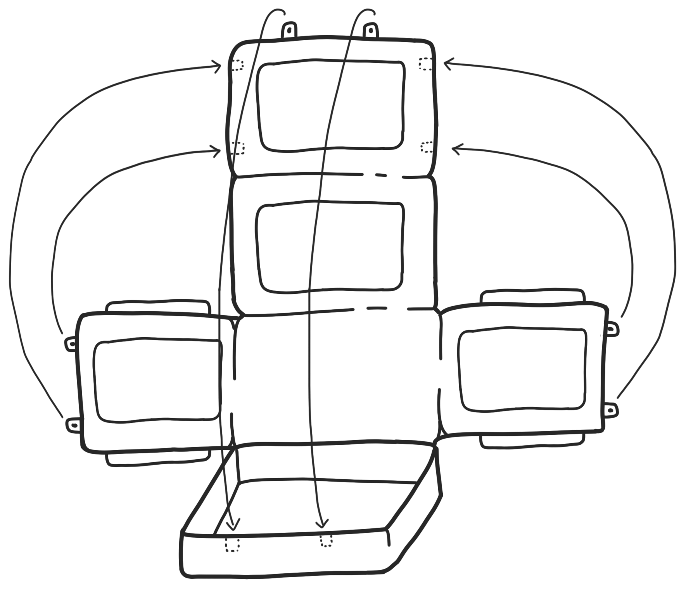

Pet air small
Bachelor thesis with Volvo Cars
 

Today, pets are considered as important as human
family members by many. Pets get to follow their owners almost everywhere and
therefore Volvo is developing a series of products for transporting pets in their cars,
called PetAir. The project was carried out by me alone working half-time over a span of six months.
The project begun with researching what types of products that were currently sold on
the American and Swedish market. Then, the target group was determined and user
studies including a digital focus group, a survey and a summation of research done by
Volvo of the US market and the Chinese market was conducted. This constituted the
information on which the project was built and was compiled into a requirements'
specification. Based on these requirements I started the design phase. The final concept
was an inflatable pet carrier built up by a base and an upper
part that can be used as both a pet bed and a carrier.

The aim of this project was to develop a product concept för a transportation cage for cats and small dogs weighingtwo to six kilograms. The concept fit in all volvo car models and is fastened using seatbelt buckles in any passenger seat. The concept prevent the pet from unwanted leaving of the car and can also be carried by pet owners for transportation outside the car.
 The cage is made up of two individually inflatable parts. The base part is designed as a bed
and can be used separately for pet owners who prefer not to use a cage or for shorter
trips for example. The base part has supportive edges for the pet to lean against to increase
comfort and counteract motion sickness. The upper and base part together form a full carrier that
does not need to be combined with other products.
When the upper part is not used, it can be deflated and folded in under the base part.
Worth noting is that the parts are connected by the rear wall to increase the carriers
strength and stability. The other walls of the base and upper part are attached
by clickable buckles whose construction resemble a smaller variant of those in one
seat belt buckle. The concept was evaluated with feedback from some participants in the
pre-study. The feedback was predominantly positive.